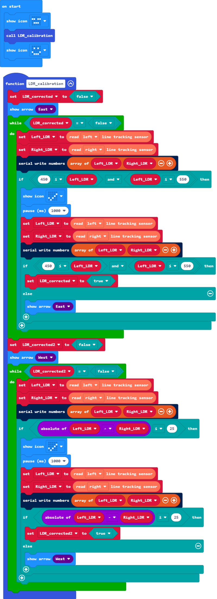

校准巡线检测电路
设计思路
为了能以较高的灵敏度应用巡线检测电路，我们需要手动对两个光敏电阻对应连接的可调电阻进行微调，使其工作在灵敏度较高的区间内，且应该尽量使相同光照强度下输出的电压模拟量保持相等。
我们可以直接应用采集巡线检测电路的电压模拟信号教程中所示的例程来在电脑上输出采集到的电压模拟量数值，然后使用螺丝刀对可调电阻进行调节。
在micro:bit所能测量的0-1023级电压模拟量范围内，越靠近中间值，光敏电阻对光照强弱变化的响应灵敏度就越高。
所以对巡线检测电路校准时，应在稳定的环境光下，尽量将两个可调电阻调节到靠近中间值512，并尽量使二者在相同光照强度下输出的电压模拟量的差值减小。
以上实行校准步骤都是建立在保持micro:bit与PC连接，micro:bit与Triode-Car连接的前提下的，但实际应用中，为了提高使用时的灵敏度，最好直接在实际应用的场景下进行校准。
我们不一定总有条件在实际应用的场景下还能保持micro:bit与PC连接。在不能连接PC的时候，就需要提前写好一个可以正确的指引我们校准巡线检测电路的程序。
分析校准的步骤：
- 选择先对左侧的可调电阻进行手动调整，使其并联的光敏电阻在micro:bit对应引脚上输出的电压模拟量接近中间值。
- 在上一个条件满足的前提下调整右侧的可调电阻，使其并联的光敏电阻在micro:bit对应引脚上输出的电压模拟量接近另一个光敏电阻。
在程序上这显然是可以通过"if"条件判断来完成的，而对于实际进行手动校准的人，则是需要得到对应条件下使micro:bit显示不同图形使人也能得到条件满足的反馈。
例程

项目文件下载到本地后可导入MakeCode中查看和再编辑，也可直接通过USB烧录到Micro:Bit中运行。
设计说明
- 将程序整体放入一个"function"自定义函数中，这有利于我们从认知上在大量积木中区分某一部分的功能，方便后续调用或维护。
- 整体由两个"while"循环积木组成，加入了循环条件，这样可以在可调电阻校准完成后改变循环条件退出循环。
- 在进入"while"循环之前，使Micro:Bit显示对应的方向指示，给人以直观的行动目标，确认当前应该要进行手动调整的可调电阻。
- 第一个"while"循环积木中的程序用于校准左侧光敏电阻，其中"if"判断条件为，左侧光敏电阻输出的电压模拟量大于等于450小于等于550。
- 当满足第4条中的"if"判断条件后，使Micro:Bit显示一个表示正确的图形，给人以视觉上反馈，此时人应该停止对左侧的可调电阻的调节，随后延时1000ms再一次进行相同的"if"判断条件，用以消除手动调整可能产生的抖动而带来的误差，当再次确认条件满足时，改变控制这个"while"循环的循环条件以退出循环，执行下一步。
- 第二个"while"循环积木中的程序用于校准右侧光敏电阻，其中"if"判断条件为，左右两侧光敏电阻输出的电压模拟量相减，其差值的绝对值小于等于25。